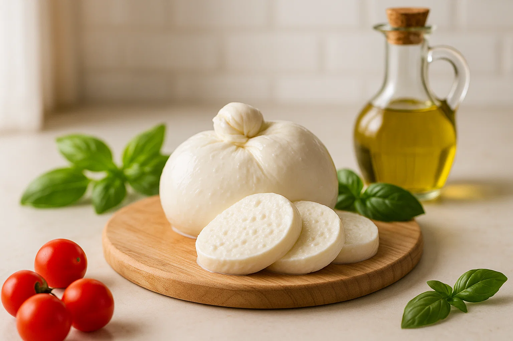
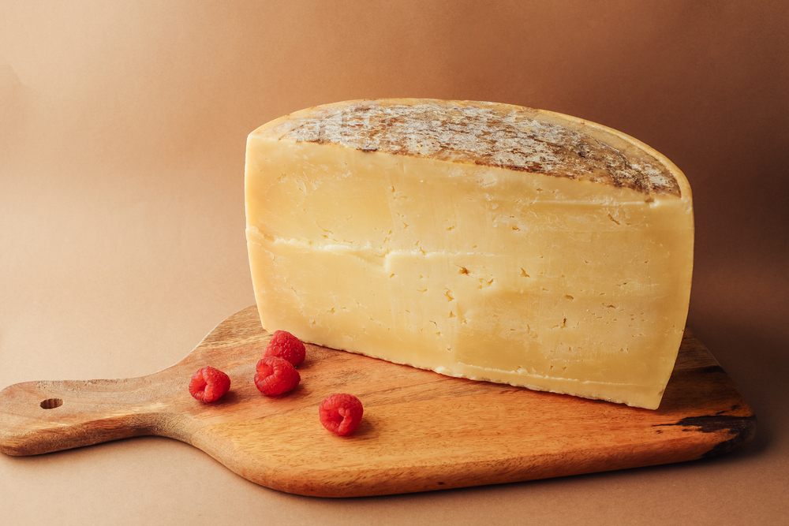
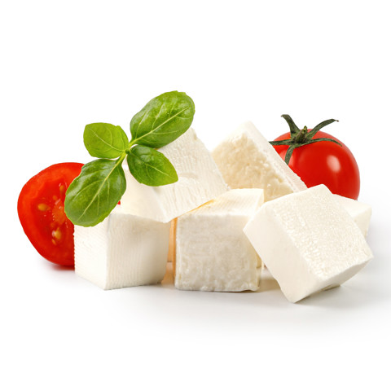
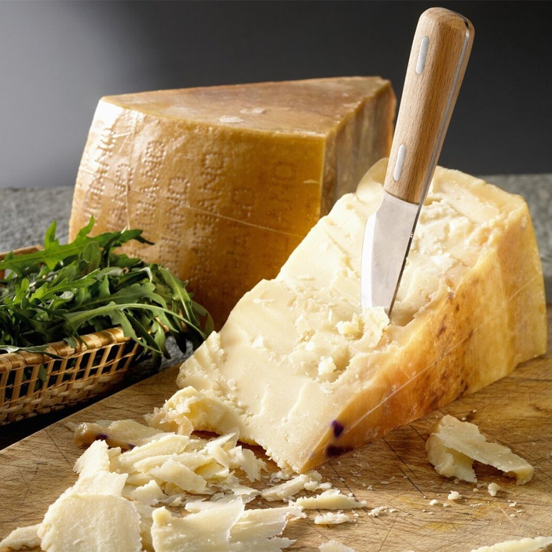
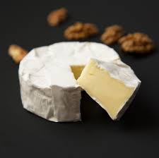
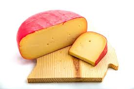

Created-by: ravix_3
Info-by: CLICK*



A delicate Italian cheese with a soft texture. Ideal for pizza, salads (such as Caprese), and appetizers. Its historical homeland is considered to be the southern Italian region of Campania. The main feature of mozzarella is its delicate layered texture and a unique technology for stretching the cheese mass.

A popular English cheese with a dense texture and a rich, nutty, sour flavor. Cheddar's main feature is its unique "cheddaring" process: the cheese is folded, pressed, and diced in a special way before being molded. This gives it a dense, slightly crumbly texture and a rich, full-bodied flavor with nutty, fruity notes and a slight tartness.

Originating in Greece, it has a salty, slightly sour taste. The texture is soft and crumbly. Most commonly used in Greek salad, vegetable salads, appetizers and baked goods. The cheese is aged in brine, which preserves its juiciness and develops its distinctive flavor.

Originating in Italy, it has a rich, nutty flavor with a slight spiciness. Most commonly used in pasta, risotto, Caesar salad, soups and sauces. The texture is firm and grainy. Its distinctive feature is its long maturation, which can last more than two years.

Originating in France, it boasts a delicate, creamy flavor with mushroom notes. The texture is soft and creamy. Often served on cheese platters, with fruit, nuts and baguette. The cheese's distinctive feature is its edible white rind made from noble mold.

Originating in the Netherlands, it has a soft, creamy flavor that deepens with age. The texture is dense and smooth. Often used in sandwiches, burgers, casseroles and hot sandwiches. Its distinguishing feature is its versatility and wide range of aging options.